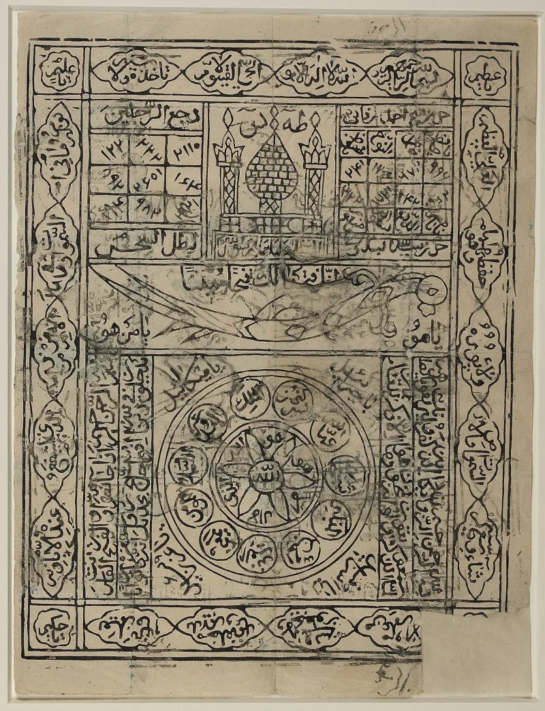
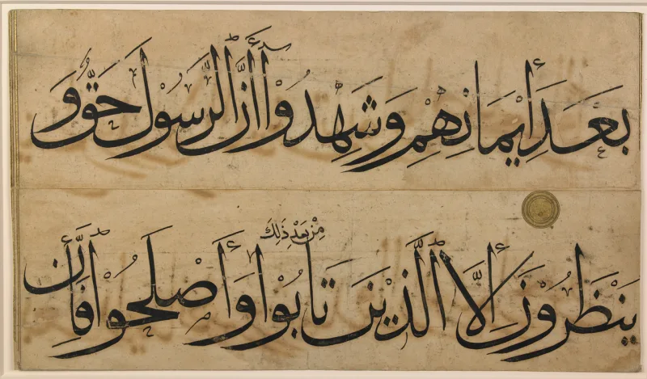
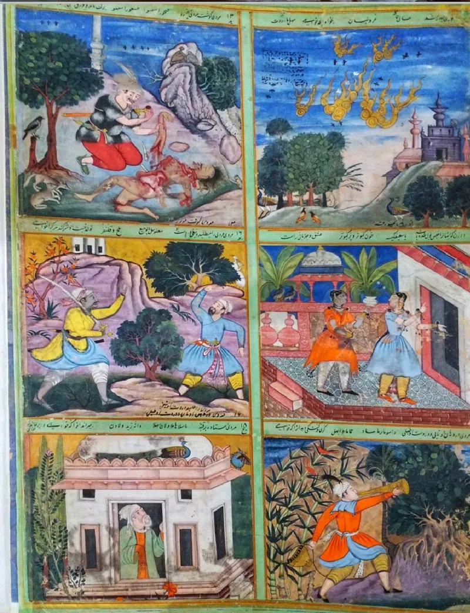

No good counter-argument has been published by Muslim scholars.
Sahih al-Bukhari 3268 carries a report from Aisha. A Jewish man named Labid ibn al-A'sam worked magic on Muhammad, using his hair and a comb.
The effect was that "he began to imagine that he had done a thing which he had not really done." Some accounts say it lasted months. Sahih Muslim 2189 has the same account.
The Quran rejects the charge with heat. Quran 17:47 and 25:8 say the wrongdoers call him a bewitched man.
Yet Islam's most trusted hadith say a spell was cast on him.
A mind can be made to hold things that never happened. That is what the report says was done to him.
If it can happen for months, during the years of revelation, how would he know which experiences were real? The Bible rules this out for a prophet.
"There is no enchantment against Jacob" (Numbers 23:23).
IslamQA 68814 and SeekersGuidance answer that the magic touched only daily life. The classic example is thinking he had gone to his wives when he had not.
It never touched revelation, which Allah guards (Quran 5:67; 15:9). It was an illness, and prophets fall ill.
It ended in a miracle, since Allah showed him where the spell was and how to undo it. Surahs 113 and 114 are linked to that rescue.
And 25:8 answers a different charge: that the Quran itself was the work of magic. Some early scholars and some modern ones simply reject the report.
Strong for you, because no answer holds all three pieces. The wall between worldly and prophetic is asserted, never shown.
The very faculties described are the ones revelation needs. And those who reject the report to save the Quran fall into the hadith problem instead.
Bukhari's best Aisha material would go, and the method with it.
"How would he have known which experiences were real, during those months?"



They say the spell touched daily life only, never the revelation.
IslamQA 68814, SeekersGuidance and mainstream commentators give the same reply. The magic touched only Muhammad's daily life at home. The classic example is thinking he had gone to his wives when he had not. It never touched revelation. Allah guarantees that (5:67; 15:9).
It was an illness, and prophets fall ill like anyone. And it ended in a miracle. Allah showed him where the spell was and how to undo it. The hadith itself reports that, and Surahs 113 and 114 are linked to the rescue.
The denial in 25:8 answers a different charge. The pagans said the Quran itself was the work of magic. That is not the same as a prophet under a passing spell. Some early scholars, and some modern ones, simply reject the report as against the Quran.
Strong for you: no answer holds all three pieces together.
The wall between worldly and prophetic matters is asserted, never shown. The hadith's own words are that he believed he had done what he had not done. That is a fault in perception and memory. Those are the very faculties revelation depends on. No test is offered by which Muhammad, or anyone, could tell a bewitched experience from a real one.
A minority reject the report to save the Quran. That is a live Muslim position. But it runs onto the hadith dilemma. Bukhari's best-checked Aisha material would fall, and Islamic method would fall with it.
The tension with 25:8 is answered only by redescribing the pagans' charge. No solution holds all three at once: sahih hadith, the Quran's denial, and a prophet you can trust.